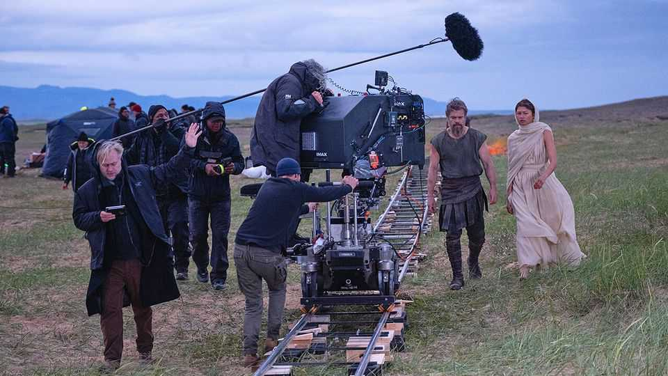

A very silly adaptation of “The Odyssey”
Sir Christopher Nolan’s film is emblematic of its time
July 16th 2026

The squabbles have been epic. Sir Christopher Nolan’s adaptation of “The Odyssey” was causing conniptions long before anyone had even seen the thing. Ahead of its release on July 17th, there was harrumphing over everything from the actress playing Helen (too black); the colour of the plume on Odysseus’s helmet (too red); the soldiers’ armour (also too black, and too Batman-like) and the vocabulary of Odysseus’s son (too American: at one point he says “Dad”). On YouTube the film’s trailer was met with criticism. “If I saw this on a plane, I’d still walk out,” reads one disgruntled comment.
The film itself is unlikely to allay any anxieties about anachronisms. In everything from its scenery to its psychology it says far more about the modern West than about ancient Greece. Startling liberties are taken with the plot to turn Odysseus, the archetypally flawed ancient hero, into a simple modern goody by flattening his flaws. Any bad behaviour is explained away either by drug use or hinted to be due to proto-PTSD (the overdiagnosis epidemic having apparently reached the ancient shores of Ithaca). The ending, which has him pierced by arrows and turned into a St Sebastian-style pincushion, is sillier still.
The scenery is similarly unsuitable, and often far too pretty. Soldiers in elegant gunmetal grey look less like ancient warriors than Warhammer toys. The ochre, candlelit palaces do not resemble warlords’ lairs but boutique hotels. During the beach scenes with the nymph Calypso (Charlize Theron), Odysseus (Matt Damon) seems less to be in agonising exile than on a Caribbean mini-break (they are wearing lots of linen). And the less said about the Cyclops, the better.
This is irksome but typical. Every adaptation of an ancient text is as much about its own era as the original work; less a lens than a mirror. The ancient Athenians transformed Homeric epic into psychologically acute tragedy. In the 18th century Alexander Pope’s translation managed to make Odysseus sound like an effete Enlightenment poet rather than an ancient warrior-king. In 1922 James Joyce’s version offered sex, stream of consciousness and that Modernist literary staple: boredom.
In this way, Sir Christopher’s retelling is part of a time-honoured tradition. It is manifestly a product of the present day. Female characters offer frequent apologias for feminism (not a noted strong suit of the ancients). The casus belli of the Trojan war is given as a desire to improve trade routes, as if Agamemnon were merely a blameless advocate for free trade rather than one of antiquity’s greatest thugs.
Adaptations have some latitude, for “The Odyssey” contains multitudes. In one of the most famous scenes, the god Proteus transforms into a lion, then a snake, then rushing water. “The Odyssey” is more protean still. In the three millennia since it was composed, it has been on an odyssey all its own.
The poem has become a noun (an odyssey) and an adjective (Odyssean). It has become a play, a TV series, a novel (“Ulysses”) and a porn film (“Odyssey: The Ultimate Trip”). It has become a lunar lander (IM-1 Odysseus), a large asteroid (1143 Odysseus) and a body lotion (which, with notes of black pepper and sandalwood, no doubt smells better than its namesake would have).
It is therefore not surprising that Odysseus, the sacker of cities, has been transformed once again by Sir Christopher. In other ways it is surprising, as “The Odyssey” has been a wrecker of reputations. In 2024 a film starring Ralph Fiennes was dismissed as “dull” and a “slog”. A movie of 1954, starring Kirk Douglas, was described as “weird” and “vapid”.
Sir Christopher has form on tricky topics: his previous film, “Oppenheimer”, about particle physics and nuclear weapons, grossed almost $1bn at the box office. Still, he has learned that “The Odyssey” is not an easy book to film.
That porn flick hints at why: it describes itself, with admirable artistic honesty, as “Three unrelated stories”. The original “Odyssey” is not much better. It tells the tale of Odysseus’s ten-year journey home from the Trojan war and thus is commonly thought of as a kind of watery Greek road trip. But it is also a sex-and-sea-monsters film, a father-and-son film and a husband-and-wife film.
Its structure is fiendishly twisty. It is about Odysseus—but readers do not meet him for four books. Moreover, many of the stories that you think of as archetypally Odyssean are either not told at all or told in brisk narrative flashback: the Sirens slip by in some 60 lines and the Lotus-Eaters in about 20. It is, as Sir Christopher said, “the original non-linear narrative”. It is, says Emily Wilson, a classicist who published a dazzling translation in 2017, “complicated”.
It is also very famous. The second work of Western literature, it was once assumed to be secondary in seriousness to its more manly prequel, “The Iliad”. Yet in recent years its fame has far eclipsed it. The first Penguin Classic ever printed was “The Odyssey”. The pyramid of intellectual biomass resting upon it is vast. It is only 12,000 lines long, but look up “Odyssey” in the British Library and you are offered 34,000 titles: almost three for every line. “Iliad” returns a mere 9,000.
That it has become yet another film—and created yet more debates—is further proof of its permanence. There are two ways to see such squabbles. One is to engage with them on their own terms. These gripes have some validity: in Homer, Helen is clearly described as “white-armed”; Odysseus probably didn’t wear a red-plumed helmet (red was a Spartan habit); ancient Greek armour was bronze, not Batman-ish; and Odysseus’s son definitely didn’t say “Dad”. As Tim Whitmarsh, Regius professor of Greek at Cambridge University, points out: “The ancient Greeks spoke Greek.”
The other way to see these arguments is as proof of the malleability of “The Odyssey”. In an era in which people bristle at American influence in Europe, it lets people bristle at Americanisms (“Dad!”) in ancient Greece. In an era anxious about the excessively manly manosphere, people can fret over excessively manly armour. In an era riven by debates about race, people have engaged in bad-tempered rows over casting. We are not arguing about “The Odyssey” when we argue about “The Odyssey”. We are arguing about ourselves.
Each generation remakes “The Odyssey” in its own image: you get the version you deserve. The clever, quarrelsome ancient Athenians took Homer and transformed him into clever, quarrelsome tragedy. The Modernists turned him into Modernist prose and poetry. The simplistic, visual modern world has taken Homer and turned him into social-media spats and an absurd Cyclops—and thus into a tragedy that is all its own. ■
For more on the latest books, films, TV shows, albums and controversies, sign up to Plot Twist, our weekly subscriber-only newsletter